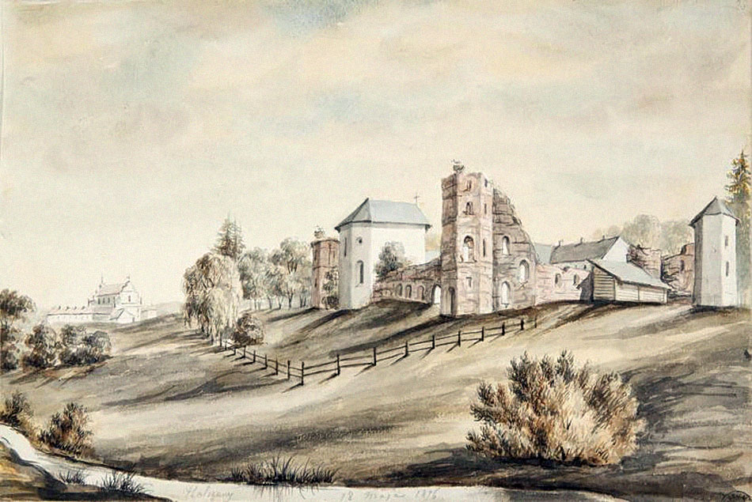
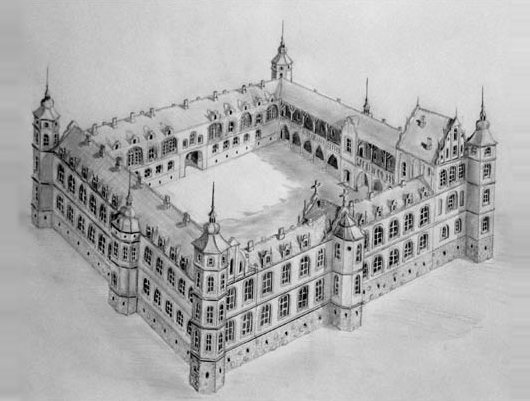
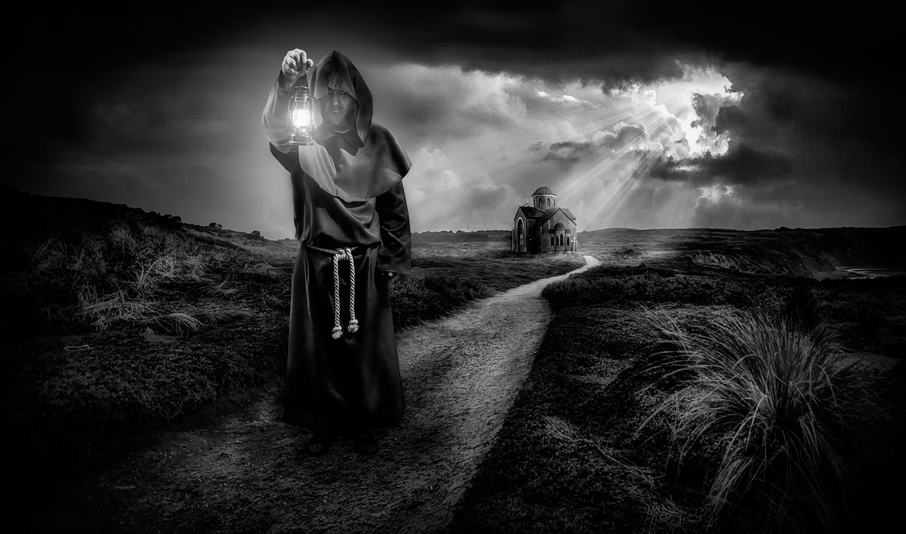
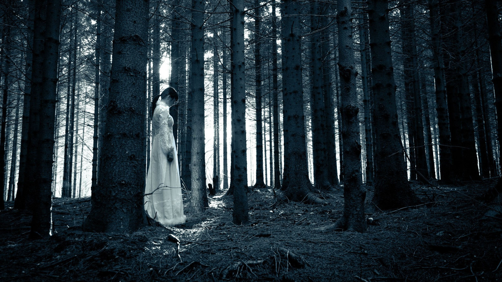
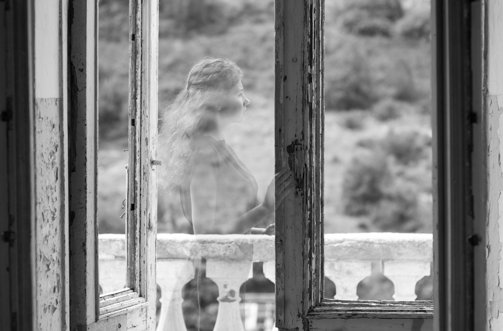

ПРИЗРАКИ
Гольшанский замок.
Призрак «Белой Панны» и «Черного Монаха»
Светлые дни замка
У дороги со стороны Ошмян, возле деревни Гольшаны, стоит камень, на котором выбита цифра 1280. Как свидетельствует летопись «Хроника Быховца», именно в этом году легендарный князь Гольша на красивой горе над рекой Карабель основал родовое поместье — «литовский град Гольшаны».
На окраине Гольшан стоит знаменитый Гольшанский замок, послуживший прототипом для известного романа Владимира Короткевича «Черный замок Ольшанский». Ныне от замка остались одни развалины темно-красного кирпича, а когда–то… Когда–то в Великом княжестве Литовском этот замок считался самым великолепным. И он действительно впечатлял своим величием: большой каменный прямоугольник с восьмигранными башнями по углам. Жилые корпуса и стены образовывали замкнутый двор, попасть в который можно было только через арочный тоннель во въездной башне. Оборонительные рвы с водой, парк и пруд окружали замок. Внутри — множество комнат, стены которых покрывали фрески и высокохудожественная лепка, картины и гобелены, оружие. Витражи из толстого стекла и мозаика каменного пола гармонировали с дорогой мебелью. Потомки князя Гольши занимали в Великом княжестве весьма высокое положение, но постоянная их резиденция была в великолепном замке над рекой Гольшанкой. К середине XVI века род Гольшанских угас.
Последняя его представительница вышла замуж за одного из Сапег и принесла в приданое родовое поместье. Павел Стефан Сапега перестроил замок и сделал его импозантнее. Но на этом золотые времена замка закончились. А затем пришел черед черных дней и столетий…
Призрак «Черного Монаха»
Во многих местах Беларуси существуют предания о привидениях и призраках, но везде они связаны с замками, старыми кладбищами или разрушенными храмами. Что–то правда, что–то нет. Но вот в Гольшанах есть самые настоящие привидения, которые поселились в руинах старинного замка и францисканском монастыре. Более того, жители Гольшан утверждают, что привидения замка здорово активизировались в последнее время. Люди связывают это с возобновлением в Гольшанах реставрационных работ — потревожен прах жертв, погребенных в стенах заживо в средневековье. Кто же они?
Когда–то давно безродный молодой парень Гремислав Валюжинич полюбил знатную красавицу–княжну Ганну–Гордиславу Гольшанскую. Девушка ответила взаимностью. Об их тайных встречах прознал отец княжны, злобный и мстительный магнат. Почитая жестокие традиции средних веков, он, «блюдя» родовую честь, приказал замуровать юношу в одной из полутораметровых по толщине стен замка. С тех пор и до наших дней по галереям и подвалам замка беспокойно бродит тень Черного Монаха (так прозвали его местные жители), наводя смертный ужас на случайных прохожих. Как утверждают многочисленные очевидцы, призрак Черного Монаха регулярно появляется в лунные ночи на разрушенных стенах замка в виде черной тени, охраняя ветхие руины от незваных гостей…
В конце ХХ в. преподаватель одного из учебных заведений пообещал отпустить воспитанников на каникулы досрочно, если они принесут для стройки по 80 кирпичей. Смекалистые учащиеся направились в Гольшанский замок. В результате над одним из самых рьяных исполнителей поручения обрушился свод. Парнишка погиб. Скажете, никакой мистики? Как знать…
Легенда о «Белой Панне»
Но одна из самых старых и знаменитых легенд в Гольшанах — о Белой Даме, или Белой Панне, как называют ее местные жители. Четыреста лет назад Павел Стефан Сапега выделил деньги на постройку костела и монастыря при нем. Строителям было обещано, что при выполнении заказа в срок, к 6 августа 1618 г., те получат большое вознаграждение. Заторопились мастера, и вдруг… одна из возведенных стен обрушилась без каких–либо причин. В качестве работы каменщиков не стоило сомневаться, они свое дело знали. Но каждый раз уже трижды отстроенная стена вновь обваливалась. Словно некие темные силы вовсю старались помешать богоугодному делу. Посовещались работяги и решили: нужна тайная жертва. А будет ей та из жен строителей, что первая принесет мужу обед. Ночь напролет молился недавно женившийся рабочий, чтобы его молодая жена, всегда первая прилетавшая на крыльях любви, на этот раз припозднилась. Но тщетно, девушка опередила всех. И поплатилась за это жизнью. Юную жену замуровали живой в монастырской стене. С тех пор по коридорам монастыря стала скитаться неприкаянная душа молодой женщины — Белой Дамы.
Миф, скажете вы? Что ж, читайте дальше. Около десяти лет назад, когда началась реставрация костела, стена вновь дала трещину. Строители начали расчищать подвал, и нашли… женский скелет, замурованный в стене. Несколько месяцев останки хранились в картонной коробке. Появился шанс навеки упокоить погубленную душу, отпев ее в храме. Однако строители «ошиблись» — кости были преданы земле без соответствующих религиозных обрядов. А вскоре здоровые, полные сил мужчины, умерли один за другим в течение четырех месяцев, так и не успев никому показать место захоронения.
В последнее столетие гольшанским призракам стало неуютно в разрушенном замке, и они перебрались в более уютное место — костел и католический монастырь ордена францисканцев, которым в этом году исполняется 387 лет. Часть костела используется по прямому назначению, а часть отдана Гольшанскому филиалу Национального художественного музея. Теперь уже здесь по ночам в запертых ходах и галереях звучат странные шаги. Особенно призраки облюбовали маленькую комнатку, расположенную в единственной башне, окрещенной «башней призраков».
Призрак, названный Черным Монахом, является в ясную ночь в виде тоненького черного силуэта на фоне окна или ниши. И начинается нечто странное: потолок меняет форму, стены пытаются сомкнуться. Человек, находящийся в это время в «башне призраков», обо всем забывает и, словно парализованный, наблюдает за происходящим.
Белая Дама недолюбливает мужчин, ведь именно они предрешили ее участь. Каждый из них, повстречавшись с призраком ночью, рискует выйти наутро изрядно поседевшим. По свидетельствам очевидцев, несчастный попадает в некую зону, лишенную законов гравитации. Обливаясь холодным потом, он может целую ночь бегать по помещениям, спасаясь от жуткого наваждения, но так и не найти выхода. При этом ориентация в пространстве потеряна — многие утверждают, что бегали по потолку.
А еще Белая Дама почему–то недолюбливает журналистов. Как–то группой Белорусского ТВ в замке снимался сюжет для новогодней программы. По сценарию актеры в образах Черного Монаха и Белой Дамы должны были пройти через импровизированный мост между стенами. Сделали 12 дублей — все напрасно, ничего не клеится. А когда после очередного неудачного, тринадцатого по счету, дубля актриса–Дама, в белоснежном платье возвращалась на «исходную», она, без видимых причин, свалилась с моста вниз и очень сильно ударилась головой. Был ли это просто несчастный случай или проделки призраков? Свидетели утверждают, что со стороны это было похоже на резкий удар в грудь. И сама актриса тоже почувствовала сильный толчок.
Очевидцев, наблюдавших девушку–привидение, в последние годы все больше. Так, сотрудники Гольшанского филиала Национального художественного музея РБ едва ли не ежедневно сталкиваются с разной «чертовщиной»: то беспричинные многодневные постукивания в оконные стекла слышат, будто кто–то камешки бросает, то задремавшему сторожу незримая рука тумаки отвешивает, то будто тонкая прозрачная дамская ручка тянется к настенному выключателю.
Довелось поволноваться и местному подростку Саше, надумавшему после полуночи прокатиться на велосипеде возле монастыря. На расстоянии 3–4 метров он увидел зависшую примерно в 20 сантиметрах над землей фигуру женщины в белой, похожей на подвенечную, одежду с рукавами ниже пальцев, а вместо лица — черное пятно. Силуэт подзывал мальчика, махая рукой. Парень бросил велосипед и дал деру, на бегу ощущая игольчатое покалывание в спину. А когда вернулся с дедом за велотранспортом, призрак исчез, но в этом месте осталось некое холодное дуновение.
Немало страху натерпелись и две столичные журналистки, ночевавшие в монастыре в «комнате призраков» (в Гольшанах нет гостиницы. — Прим. автора). Пока одна девушка мирно спала, вторая любовалась выразительным сводчатым потолком, напоминающим шестиконечную звезду. Вдруг прямо на ее глазах в одном из углублений стены стала концентрироваться какая–то тень. Когда тень разрослась до таких размеров, что полностью закрыла окно, на ней словно мелом нарисовался силуэт худенькой девушки с длинной шеей, в полуистлевшей одежде. Свидетельницу аномалии охватила жуткая паника, но ни бежать, ни кричать она не смогла — ее будто парализовало. В этот момент вдруг с плачем вскочила с постели спавшая рядом подруга — похожий кошмар преследовал и ее, но только во сне! За окном занималось утро, а девушкам казалось, что эта «жуть» длилась лишь несколько минут. И таких примеров не один десяток.
Несколько лет назад в Гольшанах побывала экспедиция гомельской организации «Парамир», которая занималась исследованием феномена гольшанского привидения. По словам одного из членов экспедиции Юрия Рафиева, исследования, как это зачастую водится, породили больше вопросов, нежели дали ответов на гольшанские загадки. В монастыре систематически срабатывали установленные в кельях и коридорах датчики специальных приборов, направленные на обнаружение движения крупных объектов и выплесков энергии, самопроизвольно засвечивалась фотопленка с важнейшими кадрами. Но самое главное — практически все участники экспедиции, ночевавшие в монастыре и «башне призраков», либо видели тени и силуэты, световые пятна, либо слышали звуки шагов, шорохи одежд, стоны. Сам Юрий Рафиев твердо убежден: призраки или некий их аналог в костеле Гольшанского замка «прописаны».
Поведал Юрий и об еще одной местной аномалии — водяной мельнице, расположенной в самом начале Гольшан. Внутри она пустая, сохранились лишь стены и подобие крыши. Но люди уверяют, что по ночам отчетливо слышны звуки мелющих жерновов, скрип повозок, ржание лошадей и даже переговоры мельника с заказчиками.